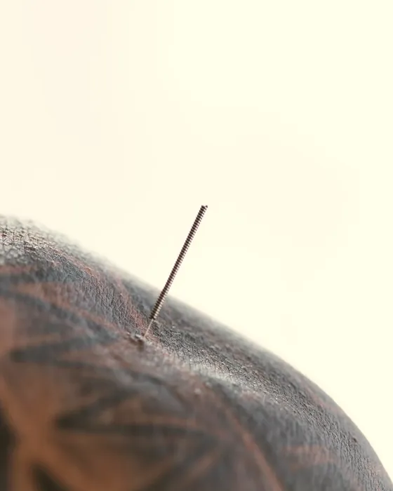
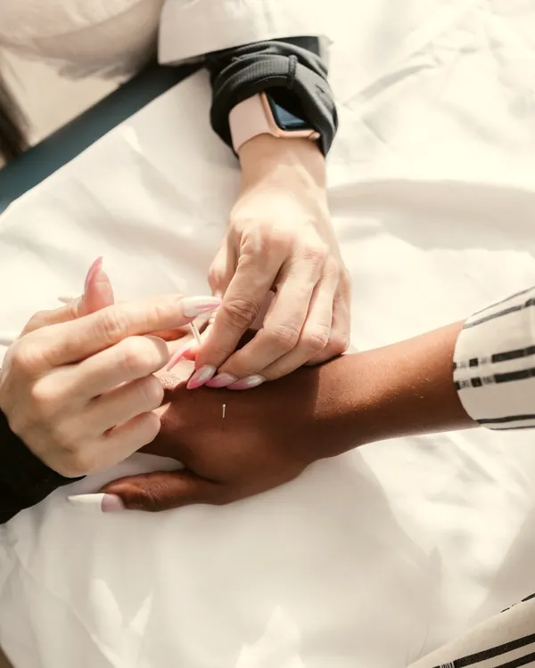
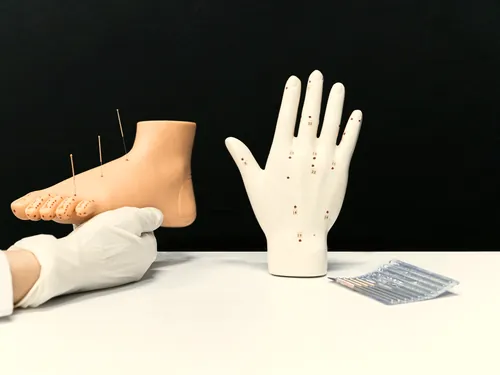
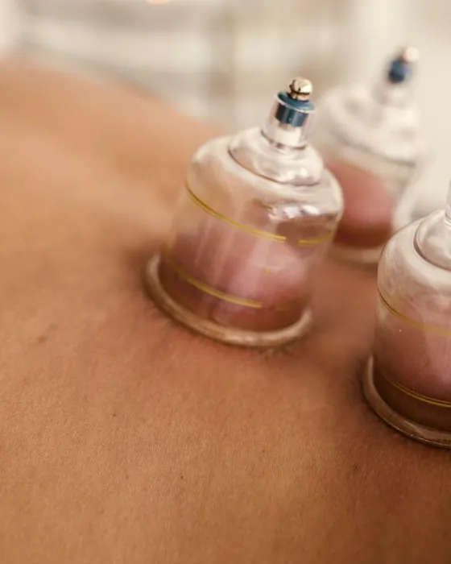
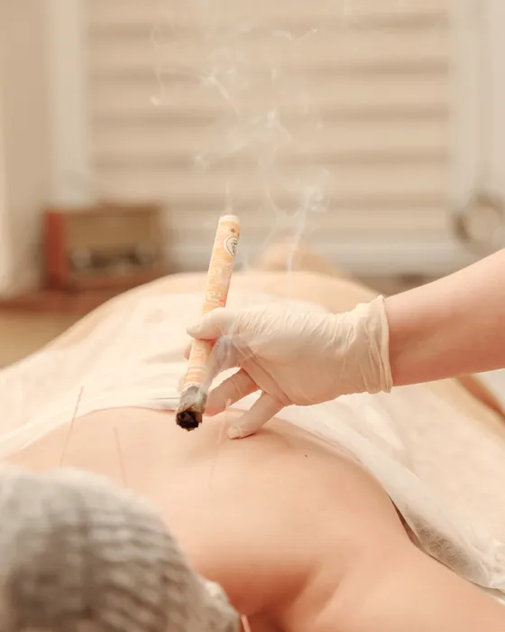
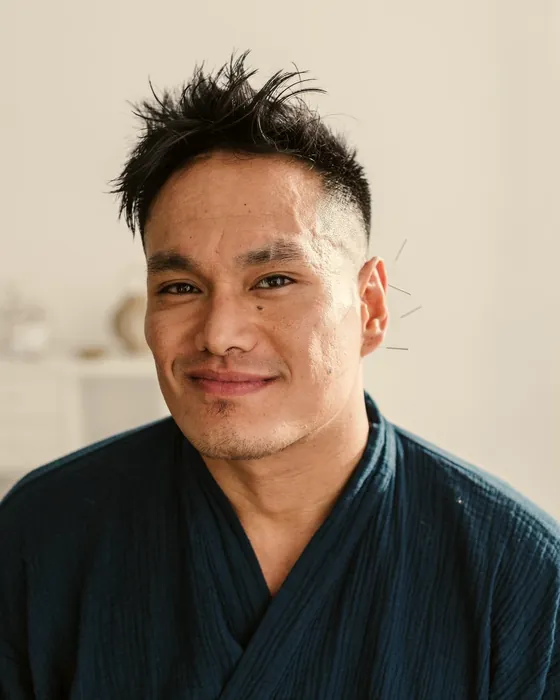
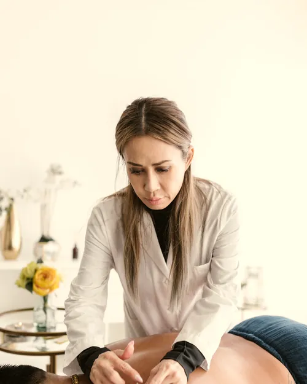
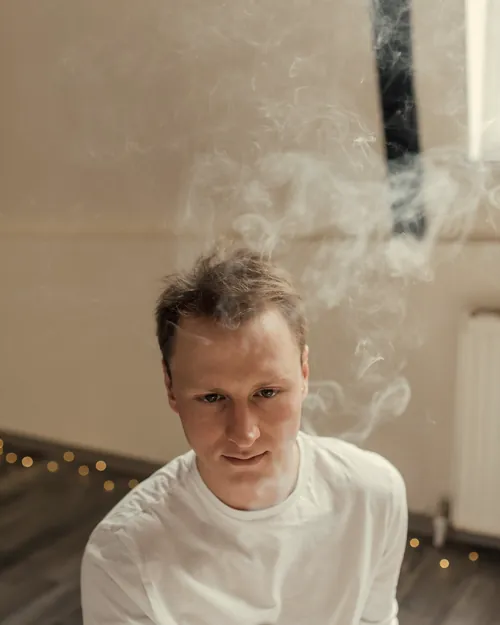

01
Acupuntura
Agulhas finas e descartáveis em pontos escolhidos a cada sessão.
Acupuntura e medicina integrativa · Asa Sul, Brasília
Acupuntura, moxabustão, ventosaterapia e fitoterapia com médicos acupunturistas, para dor, sono e ansiedade.
A clínica
Na Meridiano, toda sessão é feita por médicos com título de especialista em acupuntura. Começamos pelo diagnóstico clínico, cruzamos com a leitura da medicina chinesa e combinamos as técnicas que fazem sentido para você, sem pacote fechado.


Terapias

Agulhas finas e descartáveis em pontos escolhidos a cada sessão.

Sucção suave para tensão muscular e recuperação.

Calor da artemísia sobre os pontos, sem tocar a pele.
Fórmulas prescritas e manipuladas, com revisão médica.
Massagem terapêutica chinesa, firme e precisa.
Primeira sessão
A primeira sessão começa com consulta médica: histórico, exames, pulso e língua. Depois vem o tratamento, já no mesmo dia, e você sai com o plano escrito das próximas semanas.

Seu plano
Escolha a queixa, diga há quanto tempo ela acompanha você e veja um plano típico. O plano real é definido na consulta.
8 sessões em 8 semanas
Duas por semana no primeiro mês, depois uma.
Para quem é
Equipe

Médica acupunturista · CRM-DF 00000
Dor crônica e medicina do esporte.
Médica acupunturista · CRM-DF 00000
Gestação, sono e ansiedade.

Médico acupunturista · CRM-DF 00000
Moxabustão e fitoterapia chinesa.
A agulha é mais fina que um fio de cabelo. A maioria sente uma pressão leve ou um calor no ponto, que passa em segundos.
Sim, estéreis e de uso único, abertas na sua frente.
Depende da queixa e do tempo que ela existe. Na primeira consulta você recebe uma estimativa por escrito, revista a cada quatro sessões.
Emitimos nota para reembolso. Acupuntura médica tem cobertura em vários planos.
Contato
SHLS 716, bloco 0, sala 000 · Asa Sul, Brasília-DF
Segunda a sábado, 7h às 20h